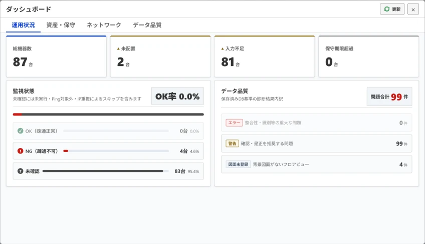
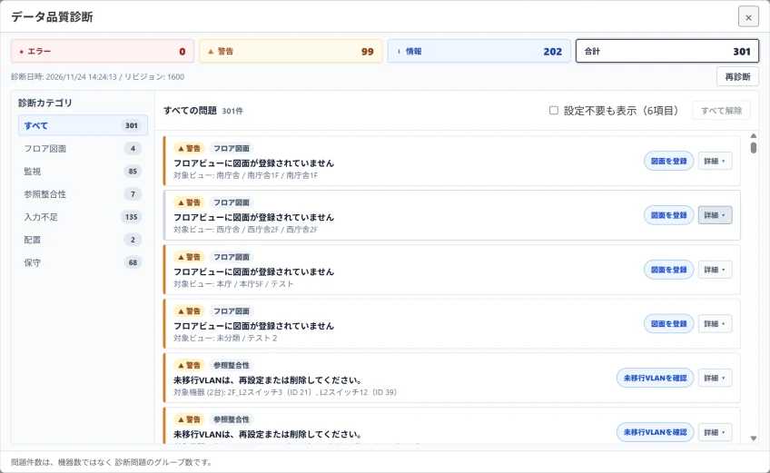

分析・品質管理ガイド
システム全体の状況を集計するダッシュボードと、台帳や接続の抜け漏れ・不整合を検出するデータ品質診断の使い方を説明します（いずれも管理者専用）。
ダッシュボード（4タブ構成と指標）
上部バーの「ダッシュボード」から開きます。4つのタブで全体の状況を把握し、一部の指標やボタンから機器台帳・データ品質診断・IPアドレス管理・ラックビューへ直接移動できます。


| タブ名 | 確認できる主な指標と絞り込み遷移 |
|---|---|
| 運用状況 |
|
| 資産・保守 |
|
| ネットワーク |
|
| データ品質 |
|
集計の基準と数値を読むときの注意
- 画面基準と保存済みDB基準の違い: 「運用状況」の機器数・監視状態や「資産・保守」の期限・内訳・ラック、「ネットワーク」のポート・共通接続（接続端点のポート指定状況を除く）は画面上の最新データを集計します。一方、データ品質関連・IPアドレス管理集計・接続端点のポート指定状況は保存済みDBが基準です。
- 品質連動の指標が「—」になる場合: 未保存の変更があるとき、未取得・取得失敗のとき、または他者の更新でリビジョンが一致しないときは「—」になります。未保存なら保存し、取得失敗ならダッシュボード右上の「更新」を押します。リビジョン不一致の場合は、画面を再読み込みしてから「更新」してください。
- IPアドレス管理集計の「—」と注意表示: 未取得・取得中・取得失敗のときだけ「—」になります。取得済みであれば、未保存の変更やリビジョン不一致があっても数値を残したまま「画面データと差異がある可能性があります。」を表示します。
- 項目別登録状況: 値が入力されているかどうかの集計であり、入力内容の正確さまでは保証しません。
データ品質診断と「設定不要」
上部バーの「管理」→「データ品質診断」を開くと、保存済みDB全体を対象にデータの抜け漏れ・重複・参照不整合を診断します。


重大度の区分と診断の進め方
| 区分 | 意味と主な対象 |
|---|---|
| エラー | 整合性や形式の重大な問題（参照先が存在しない配置・接続・ポート、重複接続、日付やポート番号の形式不正など）。 |
| 警告 | 確認・修正を推奨する問題（未配置機器、IP・MAC・管理番号等の重複、Ping対象の識別不可、フロア不一致、図面未登録、旧接続・未移行VLANの保留、推奨項目の不足など）。 |
| 情報 | 運用上の補足・確認項目（接続端点のポート未指定、保守期限未登録、IP未設定による監視対象外相当、機器名称の類似、保守期限30日以内など）。 |
- 上部の重大度カード（「エラー」「警告」「情報」「合計」）や左側の「診断カテゴリ」で一覧を絞り込みます。右上の「再診断」で最新DBを再検査できます。
- 各問題の修正導線（ポート未指定の「接続を確認」、保守期限未登録の「台帳で確認」など）から対象画面へ移動して修正します。
- 機器個票で修正を保存し、未保存変更がない状態で診断画面へ戻ると自動的に再診断します。
上部の「合計」件数は機器数ではなく、診断問題のグループ数です（1台の機器に複数問題があればそれぞれ数え、重複グループは1件にまとめます）。
「設定不要」の登録・再表示・解除
入力する予定がない項目について、未登録の警告・情報を一覧から隠す機能です。管理者間で共有され、バックアップにも保存されます。
- 対象範囲: 機器の未設定項目（IPアドレス、推奨項目、保守期限）の項目単位、および共通接続の端点ポート（「始点ポート」「終点ポート」）の端点単位です。
- 修正済みとの違い: 「設定不要」は値を入力した状態（修正済み）ではありません。同じ機器の他の不足項目や、接続の反対側の端点は通常一覧に残ります。
- 登録方法: 問題行の「詳細」を開き、該当項目の「設定不要にする」を押します。
- 再表示と手動解除: 一覧見出しの「設定不要も表示（N項目）」をオンにすると設定不要の項目を確認できます（再表示しただけでは解除されません。Nは上部の診断件数やダッシュボードの問題件数には含めません）。手動で解除するには、再表示した対象行の「詳細」を開き、該当項目の「設定不要を解除」を押します。
- 自動解除条件: 対象の項目へ値を保存したとき、対象の機器・接続を削除したとき、または該当する接続の端点を別の機器へ付け替えたときは、「設定不要」が自動的に解除されます。